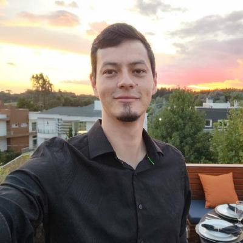

Técnico de Infraestrutura de TI
Estudante de Ciência da Computação - Instituição Atitus Educação
Fluente em português | Espanhol como língua nativa

Sou uruguaio, nascido em 1995, e construí minha base profissional desde cedo ao lado do meu pai, atuando na área elétrica. Foi ali que desenvolvi não apenas habilidades técnicas, mas principalmente valores como responsabilidade, dedicação e compromisso com a entrega.
Em 2017, me mudei para Passo Fundo, onde iniciei uma nova fase da minha trajetória, expandindo minha atuação para a área de tecnologia. Hoje trabalho como Técnico de Infraestrutura de TI na Farmácias São João e curso Ciência da Computação, consolidando essa transição entre áreas técnicas e digitais.
Tenho como característica principal a adaptação: não espero ter todas as respostas para começar, mas busco ativamente o conhecimento necessário para resolver cada desafio. Diante de um problema, minha postura é investigar, aprender e executar.
Meu diferencial está na persistência. Quando assumo uma tarefa, sigo até o final. Não desisto até entregar — com qualidade, responsabilidade e resultado.
Técnico de Infraestrutura de TI
Atuação com redes, racks, cabeamento estruturado, salas de telecomunicações e suporte técnico.
Auxiliar Técnico
Serviço militar obrigatório
Experiência em obras residenciais e comerciais
© 2026 - Eduardo Barreda